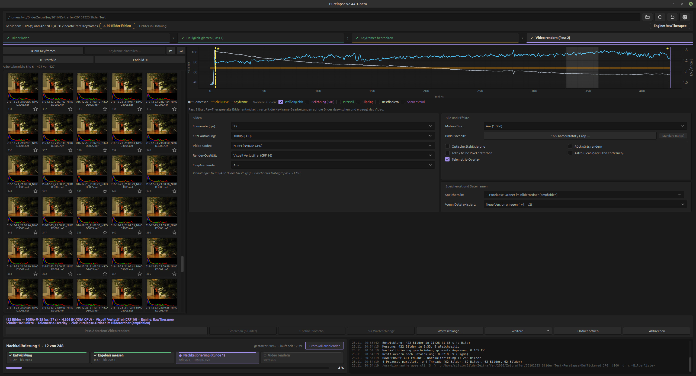

Timelapses without flicker.
Purelapse smooths the brightness of your RAW or JPG sequences, drives ART, RawTherapee or darktable and renders a clean video – from sunsets to holy grail.

See for yourself.
Each shows the same sequence: on the left straight out of the camera, on the right after Purelapse. Both videos were made entirely in Purelapse – deflickering, developing with the RawTherapee engine and video output, no other program involved.
Video without sound · 18 seconds
Second series in original quality · 2560 × 720 · 50 fps · 29 seconds · 34 MB – click to play, full screen recommended
Three steps from folder to video.
A step bar guides you through the workflow. Completed steps are marked, and you can go back to any of them at any time.
Smooth brightness
Purelapse measures every RAW in linear light and writes an exposure correction into the engine's sidecar files. You see the target curve in the chart right away.
Grade keyframes
Mark individual frames as keyframes and adjust white balance, contrast or saturation – right inside Purelapse or in the engine. Everything in between is blended smoothly – with darktable, the complete module stack.
Render video
The engine develops all frames, Purelapse re-measures and corrects in further rounds until the residual flicker is below 0.008 EV. Then the video is created.
Everything in one program.
From the first measurement to the finished video file – without switching between half a dozen tools.
Deflicker in linear light
16-bit measurement that stays reliable even in dark night shots. It leaves out the sun and blown-out lamps by itself, and a measuring area covers special cases.
Keyframes
Set anchor frames, and Purelapse carries the settings smoothly across all frames in between – with darktable more than 60 modules, from white balance to filmic.
Quick settings
Colour temperature, green balance, brightness, contrast, saturation, sharpening and denoising – with a real preview from the engine.
Motion blur
Averages 3 to 25 frames into one video frame – for softly drifting clouds, water and stars.
Camera move & effects
Smooth 16:9 move from A to B, accurate to fractions of a pixel, with gentle acceleration and braking. Plus stabilisation, denoising, hot pixels, astro clean, telemetry overlay, fade in and out.
Preview & comparison
Quick preview in minutes from the camera's embedded images, a five-frame preview, an untouched version and a comparison video.
Warnings
Detects missing frames, clipped and pink highlights, and a fluctuating white balance.
Queue
Line up several folders with their own settings and let them run overnight.
Telegram
A message on your phone when a run is finished – or when something goes wrong.
Clean colour
Video colours to the HD standard BT.709, HEVC 10 bit against banding in the sky, and optional 16-bit intermediate images from the engine all the way to the video.
Fast, no compromises
Measures and develops several frames at once, darktable included. A cancelled run picks up where it left off.
Tidy
Just one configuration file. Profiles and measurements are written so that a crash never leaves half-written files behind.
From day into night.
In holy-grail shots the camera changes shutter speed, aperture or ISO during the sequence. Purelapse is built for exactly that.
- Compensates exposure jumps. Every step caused by changed camera settings shows up as a brightness jump in the measurement and gets smoothed out.
- Ramping interval. If the interval grows with the shutter speed, that's treated as normal – only real gaps are reported.
- Choose the light progression. Constant, sunrise or sunset: if you like, the progression only gets brighter or only gets darker.
- Sun elevation in the chart. With GPS from the image, Purelapse shows the limits of civil, nautical and astronomical twilight.
Up to 8K, up to 120 frames per second.
Rendering is done with FFmpeg – on the CPU or on the graphics card, with colours to the HD standard BT.709. Before every run, Purelapse checks that the chosen hardware codec works on your computer.
- Resolution (16:9)
- 720p1080p1440p4K8K
- Frame rate
- 23.976242529.97305059.9460120 fps
- Codecs
- H.264H.265 / HEVCHEVC 10 bitApple ProRes 422 HQ
- Encoding
- CPUNVIDIA NVENCIntel QuickSyncVAAPI (AMD / Intel)
- Bit depth
- 8 bit10 bit (HEVC 10 bit, ProRes)16-bit intermediates (TIFF)
- Quality
- Visually lossless (CRF 16)High (CRF 20)Standard (CRF 23)Low (CRF 28)
- Motion blur
- off3456789101215182025 frames
Your engine, your edits.
Purelapse writes the exposure correction into the profiles and spreads your keyframe edits across the frames in between. Everything else you've set up in the engine stays as it is.
ART
- Deflicker and recalibration
- Keyframes
- Quick settings
- Real preview
- Hot pixel correction
- Highlight reconstruction
RawTherapee
- Deflicker and recalibration
- Keyframes
- Quick settings
- Real preview
- Hot pixel correction
- Highlight reconstruction
darktable
- Deflicker and recalibration
- Keyframes
- Quick settings
- Real preview
- Hot pixel correction
- Highlight reconstruction
With darktable, Purelapse carries the complete module stack of the keyframes and blends numeric values such as white balance, sharpening and colour balance smoothly. There the quick settings cover brightness, contrast, saturation and sharpening. darktable-cli develops with up to four processes at once. Formats: NEF, CR2, CR3, DNG, ARW, RAF, ORF, RW2, PEF, SRW.
Ready in two minutes.
- Install ART, RawTherapee or darktable for the RAW workflow. JPG sequences don't need an engine.
- Download the AppImage. It contains Python, Qt, OpenCV and FFmpeg – nothing to install.
- Make it executable and start it with the two commands in the box.
- In Purelapse, open Settings (gear at the top right) and enter the path to
ART-cli,rawtherapee-cliordarktable-cli.
$ chmod +x Purelapse-2.42.1-beta-x86_64.AppImage $ ./Purelapse-2.42.1-beta-x86_64.AppImage
Runs on Linux Mint 21 / Ubuntu 22.04 and newer (x86_64). What's new? All versions →
Happy to share.
Purelapse is a beta. Feedback, bug reports and ideas are very welcome.
Everything in detail.
The complete technical description of Purelapse 2.42: every feature, every processing step, every threshold. Each chapter can be expanded on its own.
01Workflow and modesSteps, run types, progress display
Step bar
The interface guides you through four steps: Load images → Smooth brightness → Edit keyframes → Render video. For RAW, “Smooth brightness” is pass 1 and “Render video” is pass 2; for JPG the keyframe step is skipped. Completed steps are marked, and every step stays clickable.
Run types
| Run | What happens |
|---|---|
| JPG direct | Measures all JPGs, evens out brightness and colour channels, stores the deflickered frames (JPG quality 95) in Deflickered_JPG and renders the video in a single run. |
| RAW pass 1 | Measures every RAW in linear light, computes the target curve and writes the exposure correction into the engine's sidecar file (.arp, .pp3 or .xmp). |
| RAW pass 2 | Distributes the keyframes, has the engine develop, re-measures the result, recalibrates and renders the video. |
| Preview (5 frames) | Develops five frames spread evenly across the sequence with all current settings. |
| Quick preview | A rough video in minutes from the camera's embedded preview images. |
| Untouched version | The timelapse without any processing, as a reference. |
| Comparison video | Two finished videos side by side or split. |
Folders and formats
- A folder holds one sequence – JPG or RAW, not mixed. If both are present, RAW is used.
- RAW formats: NEF, CR2, CR3, DNG, ARW, RAF, ORF, RW2, PEF, SRW.
- At start-up Purelapse offers the last workflow and shows its state: number of RAW/JPG files, “pass 1 done”, “frames developed”, number of finished videos and the time of the last change. Only file names are read, so the dialog appears instantly.
Progress display and log
- Before every run Purelapse shows the expected steps (e.g. development → measure result → recalibration → stabilisation → render video). Each step gets its duration and state; progress, remaining time and percentage are shown in the status line.
- The log window shows every message with a time stamp, coloured by error, warning and success. It opens by itself on an error. All messages exist in German and English.
- “Cancel” stops any run; running engine processes are terminated immediately.
02Loading and reviewFilmstrip, chart, gaps, highlights, sun elevation
Filmstrip
- Thumbnails come from the camera JPEG embedded in the RAW file; if there is none, rawpy develops the frame at half size. Every tile (128 × 85 pixels) carries an RGB histogram.
- Loading runs in parallel on all CPU cores but one.
- Keyframes are marked; “★ keyframes only” hides all other frames without breaking the link to the chart. Buttons jump to the first and last frame.
- Start frame / End frame restrict the workflow to part of the sequence. The choice is stored per folder; run pass 1 again afterwards.
Engine detection
If the folder already contains sidecar files of exactly one engine (.arp, .pp3 or genuine darktable .xmp), Purelapse switches to that engine when loading. XMP files that only hold a star rating don't count.
The selected engine is always shown on the right below the folder path (“Engine: RawTherapee”, for JPG “JPG · no engine”). If its program is missing, a warning appears there; a click opens the settings.
Chart
- Two main curves: measured brightness (“Original”) and the target curve. Every change of strength, light progression or exposure redraws the target curve instantly.
- Optional curves: white balance, exposure from EXIF, shooting interval, clipping, residual flicker (after pass 2) and sun elevation.
- A click in the chart jumps to that frame; a band marks the part of the filmstrip currently visible; vertical lines show the keyframes.
Missing frames
The EXIF time stamps give the sequence of intervals. Each interval is compared with the median of the 21 surrounding ones – so an interval that grows with the shutter speed (holy grail) counts as normal. From 1.6 times that median Purelapse reports a gap together with the estimated number of missing frames (rounded ratio − 1). At least eight valid intervals are needed; the smallest, median and largest usual interval are shown as well.
Clipped highlights
| When | Basis | Threshold |
|---|---|---|
| On loading (provisional) | Camera's embedded preview JPEG | > 1 % clipped pixels |
| In pass 1 (reliable) | 16-bit sensor data: a 2×2 colour-filter cell counts as clipped once one of its photosites reaches ≥ 98 % of the white level | > 0.5 % of pixels |
Tinted highlights (pink sun)
A pixel counts as tinted if it is bright (strongest channel ≥ 0.93), red ≥ 0.96 and blue ≥ 0.88 are at the limit, and green stays at least 0.12 below. A frame is reported when more than 15 % of its bright pixels are tinted like this. A strong but genuine orange in an evening sky does not trigger the warning. The remedy is highlight reconstruction in a keyframe (see chapter 07).
Sun elevation
From latitude and longitude (typed in or “GPS from image”) and the time-zone offset at the time of shooting, Purelapse computes the sun's elevation for every frame using the astral library. The chart marks the crossings at 0° (sunrise/sunset), −6° (civil), −12° (nautical) and −18° (astronomical twilight) – useful for placing keyframes there. It has no influence on the deflicker itself.
03Brightness measurementRAW, JPG, re-measurement, measuring area
RAW (pass 1)
- rawpy develops every frame at half size, with camera white balance, without auto brightness, gamma 1.0 and 16 bit. With 8-bit gamma output, large parts of night shots would collapse to black – the mean would no longer measure exposure.
- Brightness per pixel:
0.2989·R + 0.5870·G + 0.1140·B, computed in 32-bit floating point. - Clipped areas are left out: pixels at the sensor limit (2×2 cell ≥ 98 % of white level) stay equally bright whatever the exposure and would pull the measurement towards them. They are excluded together with a narrow seam (radius ≈ 2 pixels per 1000 pixels of image edge, at least 2). If less than 20 % of the image remains, all pixels are measured.
- The average is arithmetic in linear light – unlike a logarithmic mean it doesn't depend on noise, which changes with the ISO setting.
- Also recorded per frame: share of clipped and black pixels, and the camera's white-balance factors (red/green, blue/green).
JPG workflow
The means of the three colour channels are measured. Pixels whose strongest channel reaches 250 of 255 are left out together with a seam (again with the 20 % lower limit).
Re-measurement in pass 2
- The developed frames are measured completely, every pixel counts. Conversion from sRGB to linear light is exact via lookup tables (256 levels for JPG, 65,536 for 16-bit TIFF).
- Every frame is split into blocks (at most 256 across the width). A block counts as clipped if one pixel in it reaches 250/255.
- Only blocks that clip in no frame of the sequence are evaluated, plus a one-block seam. Reason: in the finished frame “clipped” depends on the correction – a darkened sun is grey instead of white. Decided frame by frame, the recalibration would “correct” flicker that wasn't there.
- If less than 20 % remains, each frame decides for itself.
Measuring area (ROI)
A freely drawn rectangle restricts all measurements – pass 1, JPG, re-measurement and quick preview – to part of the frame. It is stored relative to the image size. Since 2.42 it is only needed in special cases, such as moving objects that dominate the frame.
Parallelism
Up to 8 frames are measured at once (beyond that the disk is the bottleneck, not the CPU), no more than half of the free memory allows at 450 MB per frame, and never more than the configured cores.
04Target curve and smoothingAlgorithm, strength, light progression, exposure
Algorithm
- Measurements are converted into stops:
EV = log₂(brightness). - A straight line fitted by linear regression describes the basic course; the work is done on the deviation from it.
- First smoothing: Gaussian filter with
σ₁ = min(1 + 0.6·s, n/3)frames (s = strength in %, n = number of frames). - Outliers are limited: deviations of more than
2.5 · 1.4826 · MAD(at least 0.05 EV) from the smoothed course are clipped – a single bad frame doesn't drag the curve along. - Second smoothing with
σ₂ = min(max(1, σ₁/3), n/6); the straight line is added back. - From a strength of 85 % the curve blends seamlessly into the pure straight line; at 100 % it is the line.
- With “Sunrise” or “Sunset”, an isotonic regression (pool adjacent violators) forces a never falling or never rising course.
- The exposure shift is added; the correction per frame is
log₂(target / measurement)in EV.
Controls
| Control | Range | Effect |
|---|---|---|
| Deflicker strength | 1–100 %, default 50 % | Width of the smoothing. Low removes only fast flicker, high also reshapes the light progression. |
| Light progression | Constant · Sunrise · Sunset | Constant keeps the course as it is; the others force it to be monotonic. Sequences with a “hump” in the light belong on Constant. |
| Exposure | −3.0 to +3.0 EV in 0.1 steps | Shifts the target brightness of the whole sequence. |
Plausibility check
Pass 1 compares the measured flicker (standard deviation of each frame against the median of its nine neighbours) with the required correction. If the correction exceeds max(0.15 EV, 3 × flicker), Purelapse points out that the deflicker reshapes the light progression, names the cause (high strength, forced progression) and shows the value for strength 25 and “Constant” for comparison.
05Pass 1: writing profilesBase profile, exposure, darktable, white balance
Base profile (ART and RawTherapee)
- Purelapse never creates a sidecar from nothing: a profile consisting only of
[Exposure]is discarded by some engines, and the correction would have no effect. A complete profile with a[Version]block is required. - Order of sources: an existing engine profile in the image folder, the base profile chosen in the settings, otherwise Purelapse has the engine create its default profile once (
-Y -j80 -con a sample frame). The result is kept permanently in~/.local/share/purelapse.
What is written
- Exposure correction per frame in
[Exposure] Compensation(auto off). If a keyframe already carries its own exposure change, it is kept as an offset from the pass 1 value. - The plain pass 1 values go to
purelapse_deflicker.json; pass 2 needs them for exact keyframe transitions. - With “Remove dead / hot pixels” the engine's defect-pixel correction is switched on (ART/RawTherapee: hot and dead pixel filter, threshold 100).
darktable
- Purelapse writes into the XMP files darktable creates on import (preference “write sidecar file for each image: on import”). If they are missing, pass 1 stops right away with an explanation – not after the measurement.
- Per module and instance priority, the last history entry below
history_endis the effective one. The deflicker value goes into exactly that exposure instance; the user's own exposure change is kept as an offset. A custom module order is supported as well. - Fresh profiles keep darktable's defaults (
auto_presets_applied); only stacks taken over from keyframes count as finished.
White balance check
From the camera's red/green and blue/green factors Purelapse computes the frame-to-frame jitter and the total span. Below 0.004 EV jitter and 0.02 EV span the white balance counts as constant. From 0.004 EV jitter Purelapse warns about automatic white balance – the deflicker only corrects brightness – and recommends giving the first and last frame a fixed white balance as keyframes.
Checks
Every profile written is read back and checked against the base profile. Format deviations are reported in the log (details in diagnostic mode), as are frames with clipped highlights.
06KeyframesMarking, distribution, blending, darktable module stack
Marking
A frame is a keyframe when it carries 5 stars – in the XMP rating or as Rank/Rating in the profile. Set it in Purelapse with the tick on the tile, or in the engine. In an existing XMP, Purelapse changes only the rating. darktable reads XMP files only on first import; a note on the keyframe page explains how it picks up the stars.
Distribution in pass 2
| Range | Profile |
|---|---|
| Before the first keyframe | Copy of the first keyframe |
| Between two keyframes | Blend with t = (i − s) / (e − s) |
| After the last keyframe | Copy of the last keyframe |
Exposure is handled separately: EV(i) = pass1(i) + Δs + (Δe − Δs)·t + calibration(i), where Δ is a keyframe's own exposure change relative to its pass 1 and calibration value. This keeps the deflicker in every frame while the keyframe grading runs smoothly on top.
ART and RawTherapee
- Numbers and number lists of equal length are blended linearly, integers rounded.
- Text and curves with different numbers of points switch in the middle (t = 0.5). Purelapse names up to four such settings per keyframe pair beforehand.
- White balance: if temperature, green or multipliers differ, the mode is set to custom temperature (ART
CustomTemp, RawTherapeeCustom) – otherwise the engine would silently fall back to the camera value. - A tool is switched on as soon as it is on in either keyframe.
darktable: complete module stack
- All modules of the keyframes are carried over, not just exposure. Each module instance is matched by operation and instance priority.
- The parameters are stored as binary data in the XMP. Purelapse decodes them with layouts taken from the darktable 4.6.1 source code (67 modules) and checks module version and data size before every blend.
- Floating-point values are blended linearly, hues along the shorter way round the colour wheel. Integers and choice lists come from the nearer keyframe.
- Switches, masks and blend modes, as well as modules present in only one keyframe, also come from the nearer keyframe.
- Geometry and retouching are never blended: crop, perspective, lens correction, retouch, spot removal, liquify, hot pixels and the pipeline's mandatory modules.
- Blended smoothly are, among others, white balance, color calibration, sharpen, color balance rgb, filmic rgb, sigmoid, tone equalizer, local contrast, haze removal and graduated density.
- Before distribution the log lists which modules are carried over and which are blended. Recommendation: use the same modules in all keyframes (copy the history with Ctrl+Shift+C / Ctrl+Shift+V).
07Quick settingsControls, mapping per engine, auto, real preview
“Edit keyframe…” edits a keyframe's profile without opening the engine. Every control has its own tick box: without the tick the value in the profile is left alone, so an edit made in the engine stays intact. Controls whose section is missing from the profile are locked instead of silently writing a key the engine would discard.
Controls and mapping
| Control | Range | ART | RawTherapee | darktable |
|---|---|---|---|---|
| Colour temperature | 2000–12000 K | [White Balance] Temperature | – | |
| Green balance | 0.6–1.8 | [White Balance] Green | – | |
| Brightness | −100…100 | [Luminance Curve] Brightness | [Exposure] Brightness | color balance rgb, brilliance × 0.01 |
| Contrast | −100…100 | [Luminance Curve] Contrast | [Exposure] Contrast | color balance rgb, contrast × 0.01 |
| Saturation | −100…100 | [Saturation] Saturation | [Exposure] Saturation | color balance rgb, saturation × 0.01 |
| Sharpening | 1–1000 (darktable 1–800) | [Sharpening] Amount | sharpen, amount ÷ 400 (200 → 0.5) | |
| Denoise luminance | 0–100 | [Denoise] Luminance | [Directional Pyramid Denoising] Luma | – |
| Denoise chrominance | 0–100 | [Denoise] Chrominance | [Directional Pyramid Denoising] Chroma | – |
White balance and denoising are deliberately missing for darktable: darktable stores camera-dependent values there (channel coefficients, noise profile) that cannot be derived from kelvin or a strength without the camera's colour matrix.
Auto-optimise
Every suggestion rests on a measurement, and every measurement appears with its number in the explanation:
- Brightness: image median to 0.44 on screen, at most ±25; changes below 2 points are not suggested.
- Contrast: only if the histogram (2nd–98th percentile) uses less than 0.88 of the scale; stretched towards 0.92, at most +28, no suggestion below 5 points.
- Saturation: only for pale images (mean colourfulness below 0.28), at most +25; damped when contrast rises at the same time.
- Sharpening: 240 to 380, stepless according to the fine structure of the subject (deviation from a Gaussian blur).
- Denoising: from the ISO value in the EXIF data (grain can't be measured in a downscaled preview): up to ISO 200 luminance 0 / colour 15, stepped up to 45 / 40 above ISO 6400.
- Highlights: if more than 15 % of the brightest areas are tinted pink, highlight reconstruction is switched on.
- White balance stays unchanged – a single frame can't tell whether the colour mood is intended.
Reconstruct highlights
| Engine | Methods | Recommended |
|---|---|---|
| ART | Off · Blend · Color · Balanced ([Exposure] HLRecovery) | Color |
| RawTherapee | Off · Blend · Color · Color propagation ([HLRecovery] Method) | Color propagation |
| darktable | via darktable's “highlight reconstruction” module in the keyframe | |
Background: in the core of the sun green hits the limit first, then the white-balance factors lift red and blue further – white turns magenta. Negative exposure compensation doesn't help; reconstruction estimates the missing channel from the others.
Real preview
- The engine itself develops the frame – with exactly the profile that would be written on saving, at no more than 2000 pixels on the long edge (headroom for zooming). Saving and preview go through the same function.
- It starts 600 ms after the last slider movement; up to 16 states are cached. Until the engine's image arrives, Purelapse shows an approximation.
- Zoom up to 8×, “Show before”, RGB histogram, “Reset”.
- “Copy from another keyframe” only takes values the own profile knows and that differ from neutral there.
08Pass 2: developmentPreparation, engine call, darktable-cli, 16 bit, resuming
Preparation
- Check that every frame has a complete profile for the selected engine. If all are incomplete, Purelapse stops rather than deliver a flickering video.
- Freezing automatics (ART/RawTherapee): an auto-matched tone curve would compute its own curve for every frame – that flickers despite clean measurements. It is switched off; if no own curve is stored, the engine's standard film curve applies. In RawTherapee a fixed auto curve is released from auto mode (which would ignore brightness and contrast). In ART the automatic of log tone mapping is switched off.
- Keyframe distribution (chapter 06).
ART and RawTherapee
- Call:
ART-cli -S -Y -o Deflickered_JPG -j100 -c <frames>(RawTherapee adds-d).-Sinstead of-s: if a sidecar is missing the engine aborts instead of silently developing with its default profile. - With 16-bit intermediates:
-tz -b16(compressed 16-bit TIFF) instead of-j100. - Several processes share the frames (every n-th frame). Each process gets
OMP_NUM_THREADS = cores / processes. - The engine's output is scanned for errors; profiles that weren't loaded are counted and reported.
darktable-cli
- One frame per call:
darktable-cli FRAME FRAME.xmp TARGET --hq true --width 0 --height 0 --core --configdir SLOT --conf plugins/imageio/format/jpeg/quality=100. - 16 bit: additionally
tiff/bpp=16,pixelformat=0,compress=1. - Up to 4 processes at once (more doesn't help on one GPU), at most one per 3 GB of free memory.
- darktable-cli locks its preset database. So each process gets its own configuration folder in the cache, into which the user's
darktablercanddata.dbare copied (from~/.config/darktableor the Flatpak version) – OpenCL settings and own presets still apply. As a side effect pass 2 also runs while darktable is open. - Time limit of 10 minutes per frame; cancelling kills running processes immediately and removes leftover lock files.
16-bit intermediate images
Option in the settings. The engine develops to 16-bit TIFF, and the video is computed in 16 bit throughout (handed to FFmpeg as bgr48le). Fine gradients in the sky stay free of banding, especially with HEVC 10 bit or ProRes. Purelapse checks the disk space first: width × height × 6 bytes × 0.85 per frame plus 5 % reserve (about 120 MB per frame at 24 megapixels). Switching the option re-develops the frames.
Resuming and cancelling
- In
Deflickered_JPG/.purelapse_developed.jsonPurelapse records for every frame the fingerprint of its profile (SHA-1) and the format. The next run only develops what is missing or whose profile changed. - After cancelling, finished frames are kept. The newest files – one per running process – are discarded because they may have been interrupted mid-write.
- The video gets exactly the developed image of each source frame, not just everything in the output folder; if one is missing, Purelapse names it.
09RecalibrationClosed loop down to below 0.008 EV
The engine never develops exactly as the pass 1 measurement predicts (tone curves, highlights, colour spaces). So Purelapse measures the result and corrects.
- Re-measurement of all developed frames (chapter 03).
- Target curve over the measured values with strength
min(deflicker strength, 15)and constant progression – only flicker is removed, the intended course stays. - Residual per frame
r = log₂(target / measurement), adjusted by the median. The figure of merit is the standard deviation σ of the residuals. - If σ is below 0.008 EV, the target is reached and nothing more is written.
- Otherwise the residual is added to the exposure in the profile. Total calibration per frame is limited to ±0.5 EV (with a warning); steps below 0.005 EV are not written.
- Only the frames actually changed are re-developed; unchanged files (same modification time and size) are not measured again.
| Setting | Engine runs |
|---|---|
| Off | 1 |
| 1 pass | up to 2 |
| 2 passes (default) | up to 3 |
| 3 passes | up to 4 |
Calibration values are kept in purelapse_calib.json, residuals per frame in purelapse_result.json; residual flicker can be shown as a curve in the chart. On the test bench the result stays at 0.0002–0.0006 EV even with the sun in the frame.
10Frame pipeline and effectsOrder, camera move, motion blur, stabilisation, astro clean
Order per video frame
- Load the frame (16 bit stays 16 bit); in the JPG workflow channel gains and hot-pixel correction.
- Astro clean (needs both neighbouring frames).
- Stabilisation.
- Crop or camera move, scaling to the target resolution.
- Motion blur.
- Denoising (JPG workflow only).
- Telemetry overlay.
- Fade in and out.
- Hand-over to FFmpeg.
Loading, stabilisation and cropping run ahead in up to 4 helper threads; everything that depends on order stays in one thread.
Camera move (16:9)
- Start and end crop are drawn in the first and last frame; position and size are interpolated in between. Without a move, a centred 16:9 crop applies.
- Motion profile: gentle acceleration and braking over 10 % of the run each (linearly rising or falling speed), steady in between.
- Sampling with fractions of a pixel: first a Gaussian blur matched to the downscaling (σ = 0.4 target pixels), then cubic interpolation. Sharpness stays the same wherever the crop lies between two pixels (variation 0.1 %), and motion is even (±0.013 pixels).
Motion blur
- Averages 3, 4, 5, 6, 7, 8, 9, 10, 12, 15, 18, 20 or 25 frames into one video frame, in 32-bit floating point and rounded.
- Adapts to the shutter speed: below 1 s the full number of frames, from 3 s about half, linear in between – long night exposures already bring their own motion blur.
Optical stabilisation
Up to 200 distinctive points per frame (downscaled to 800 pixels, greyscale) are tracked with optical flow (Lucas–Kanade); each frame pair yields a shift and rotation. The accumulated path is smoothed with a Gaussian filter (σ = 30 frames), and the difference is compensated. A 3 % zoom hides the edges.
Astro clean
Every frame is compared with its two neighbours. A pixel that is more than 30 levels brighter in both comparisons (satellites, aircraft) is replaced by the mean of the neighbours. The first and last frame stay unchanged.
Dead and hot pixels
For RAW the engine does this (darktable: “hot pixels” module, created when needed, keyframes included). For JPG Purelapse examines 15 frames spread across the sequence: a point that deviates by more than 24 levels from its 3×3 median in at least 85 % of them counts as defective and is replaced by the median. Stars and subject detail move, so they stay untouched.
Further effects
| Denoise | JPG workflow only, from ISO 800: bilateral filter with diameter (ISO − 400) / 250, limited to 3–15. |
| Telemetry | Bottom left: time, ISO, aperture and shutter speed from the EXIF data. The text never enters the motion-blur buffer. |
| Fade in/out | 0.5, 1, 2 or 3 seconds, linear from or to black. |
| Reverse | Plays the sequence backwards; stabilisation follows the direction. |
11Video outputFFmpeg, colour space, codecs, self-test, file name
Hand-over and colour space
- Frames go to FFmpeg uncompressed through a pipe (
rawvideo,bgr24, orbgr48lein 16 bit). - Conversion to BT.709 in limited range:
scale=out_color_matrix=bt709:out_range=tv,format=…, tagged with-colorspace bt709 -color_primaries bt709 -color_trc bt709. Without this FFmpeg converts using the SD standard BT.601, shifting greens and reds. - Resolution is always 16:9: width 1280, 1920, 2560, 3840 or 7680, height = width × 9/16.
- Frame rates: 23.976 · 24 · 25 · 29.97 · 30 · 50 · 59.94 · 60 · 120 fps.
Codecs
| Codec | Encoder | Pixel format | Parameters | File |
|---|---|---|---|---|
| H.264 (CPU) | libx264 | yuv420p | -preset slow -crf Q | .mp4 |
| H.264 (NVIDIA) | h264_nvenc | yuv420p | -preset p6 -cq Q | .mp4 |
| H.265/HEVC (CPU) | libx265 | yuv420p | -preset slow -crf Q | .mp4 |
| H.265/HEVC (NVIDIA) | hevc_nvenc | yuv420p | -preset p6 -cq Q | .mp4 |
| HEVC 10 bit (CPU) | libx265 | yuv420p10le | -preset slow -crf Q | .mp4 |
| HEVC 10 bit (NVIDIA) | hevc_nvenc | p010le | -preset p6 -cq Q -profile:v main10 | .mp4 |
| H.264 (Intel QuickSync) | h264_qsv | nv12 | -preset slow -global_quality Q | .mp4 |
| H.265 (Intel QuickSync) | hevc_qsv | nv12 | -preset slow -global_quality Q | .mp4 |
| H.264 (VAAPI) | h264_vaapi | nv12 → GPU | -rc_mode CQP -qp Q | .mp4 |
| H.265 (VAAPI) | hevc_vaapi | nv12 → GPU | -rc_mode CQP -qp Q | .mp4 |
| Apple ProRes 422 HQ | prores_ks | yuv422p10le | -profile:v 3 -qscale:v 9 | .mov |
Q is the quality level: 16 (visually lossless), 20 (high), 23 (standard) or 28 (low). VAAPI finds the graphics card's render node by itself.
Self-test and fallback
- A hardware codec is tested when selected and before every run: FFmpeg encodes three black test frames into nothing (under a second). A driver that doesn't work is caught before hours of development, not after.
- The system's FFmpeg is preferred (it matches the graphics driver), the bundled one is the fallback. If another FFmpeg can drive the encoder, Purelapse switches to it for this session.
- If the codec doesn't run at all, Purelapse offers the equivalent CPU codec; in the queue it switches without asking and logs it.
File name and location
- Name:
<folder>_Purelapse_<resolution>_<fps>fps, with versioning_v1,_v2…; alternatively the file is overwritten. - Location: image folder, parent folder, program folder or a folder of your choice.
- The size estimate uses
1.25 MB/s × resolution × quality × codec factor × fps/25and also shows the video length.
12Preview and comparisonFive-frame preview, quick preview, untouched version, comparison video
| Tool | How it works |
|---|---|
| Preview (5 frames) | Five evenly spread frames. For RAW the engine develops with the pass 1 profiles and the keyframes (JPG quality 92), so pass 1 must have run; for JPG the smoothing is applied directly. Camera move and fade apply. Saves a complete failed run. |
| Quick preview | Embedded camera preview images, at most 1280 pixels wide, smoothing as in the chart, crop and camera move apply. Encoded with libx264 -preset ultrafast -crf 23, file name with _Schnellvorschau. No engine, no keyframes, no effects. |
| Untouched version | Every frame as neutral as possible (RAW with camera white balance, no auto brightness), centred 16:9 crop. Deflicker, keyframes, motion blur, denoising and stabilisation stay off; frame rate, resolution, codec and quality apply. |
| Comparison video | Side by side (both scaled to 720 pixels height) or split (left half of video A, right half of video B); libx264 -preset fast -crf 18. |
13Queue and TelegramBatch processing, notification
Queue
- “Add to queue” stores the current folder with its step and all settings as a job; then you can load the next folder.
- “Run queue” processes all open jobs one after another. Cancelling pauses the queue; the next start continues at the same point, developed frames are kept.
- In the queue Purelapse switches a hardware codec that doesn't run to the CPU codec by itself instead of waiting for an answer.
Telegram
- After every run (finished or failed) a message via the Telegram Bot API (
sendMessage). - Setup: create a bot with @BotFather using
/newbot, enter the token, write to the bot, “Find chat ID” (getUpdates), “Send test message”. - Content: result, folder, task, total time, each step with its duration, residual flicker and the final message.
- The token is stored only in the configuration file, which is readable by the user alone.
14Performance and memoryThreads, processes, limits
| Area | Rule |
|---|---|
| Filmstrip | cores − 1 threads |
| Measurement | ≤ 8 frames at once, ≤ configured cores, ≤ 50 % of free memory at 450 MB per frame |
| ART / RawTherapee | Automatic: cores / 4 processes, at most 8, no more than cores and frames, at most free memory / 2.5 GB. Manual: 1, 2, 3, 4, 6 or 8. |
| darktable-cli | As above, additionally at most 4 and at most free memory / 3 GB; time limit 600 s per frame |
| Threads per engine process | OMP_NUM_THREADS = cores / processes |
| Video | up to 4 threads reading ahead (more only costs memory) |
| Recalibration | develop only changed frames, reuse unchanged measurements |
| EXIF | read once and cached |
Why several processes: ART and RawTherapee only use four to eight cores efficiently on a single frame. On a many-core machine several processes with a few threads each achieve clearly more than one process with all cores.
15Files and settingsConfiguration, working files, diagnostics, reset
Purelapse's own folders
~/.config/purelapse/purelapse.json | The only configuration file (permissions 0600): theme, language, last folder, engine paths and base profiles, all settings, start/end frame per folder, queue, Telegram. Old individual files ~/.purelapse_* are migrated on first start and removed. |
~/.local/share/purelapse | Base profiles created by the engine |
~/.cache/purelapse | Configuration folders of the darktable-cli processes, refreshed on every run |
In the image folder
*.arp / *.pp3 / *.xmp | Engine profiles with correction and keyframe grading |
purelapse_deflicker.json | Pass 1 exposure values per frame |
purelapse_calib.json | Recalibration per frame |
purelapse_result.json | Residual deviation per frame after pass 2 |
Deflickered_JPG/ | Developed or deflickered frames (JPG or 16-bit TIFF) and the development record |
Diagnostic mode
Additionally writes purelapse_pass1.csv (measurement, target, correction, clipping, white balance per frame), purelapse_pass2.csv (re-measurement and residual), purelapse_profiles.csv (profile values after keyframe distribution), purelapse_arp_check.log (format check) and purelapse_art.log (engine output). Meant for troubleshooting only; warnings appear in the log anyway.
Reset
Deletes, as chosen, logs and measurement data, working data (base values, calibration), developed frames and – marked in red – the sidecar files including edits and keyframes. RAW and JPG originals are never touched.
Safe writing
Profiles, darktable XMPs, measurement files, deflickered JPGs and the configuration are written atomically: first to a file next to the target, then moved into place in one step. If the computer goes down mid-write, the old version remains. If a profile can't be written (disk full, no permission), the run stops with a message.
16Tests and requirementsTest suite, system, what's included
Automated tests
- About 3000 checks run through the whole program – with real measurement, real FFmpeg and finished videos, using stand-in engines that behave like ART, RawTherapee and darktable-cli.
- They run on every push on GitHub (Ubuntu 24.04, Python 3.10 and 3.12) and locally with
python tests/alle.py. - Test benches measure image quality: residual flicker with and without the sun, and evenness and sharpness of the camera move.
System
- Linux x86_64, Linux Mint 21 / Ubuntu 22.04 and newer.
- The AppImage contains Python, Qt 5, OpenCV, rawpy and FFmpeg; no installation needed.
- For RAW: ART, RawTherapee or darktable with its command-line program. The darktable parameter layouts come from darktable 4.6.1; other module versions are detected and then taken from the nearer keyframe instead of being blended.
- Interface in German and English, dark and light theme.
- Licence GPL-3.0. ART, RawTherapee, darktable and FFmpeg run as separate programs under their own licences.